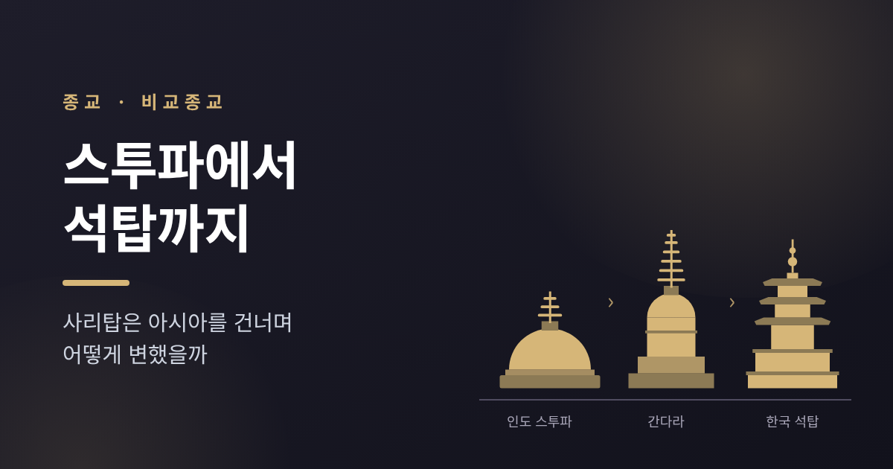
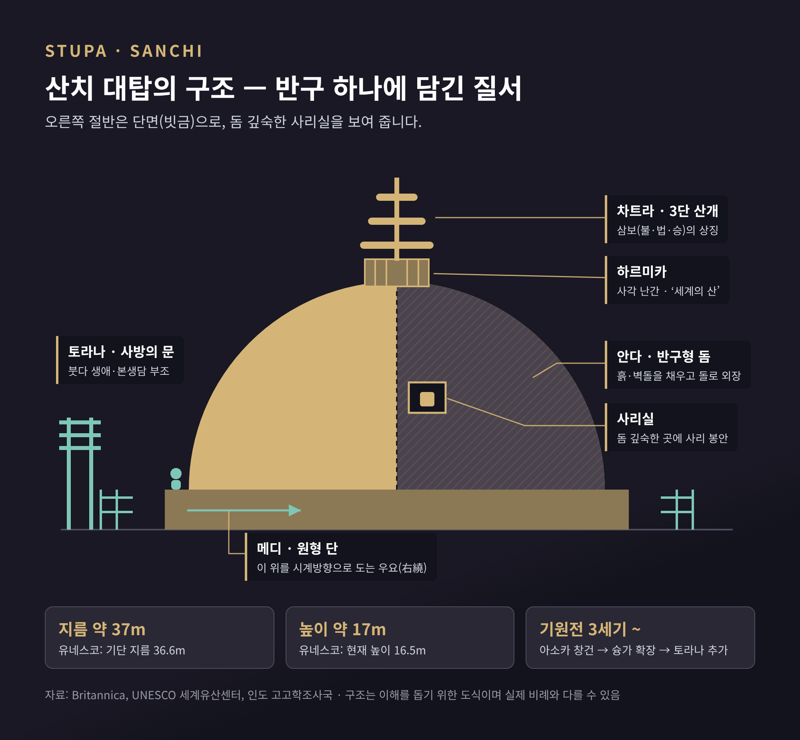
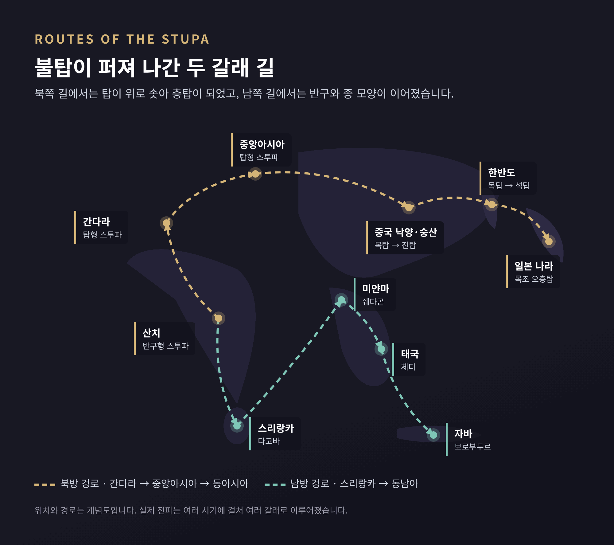
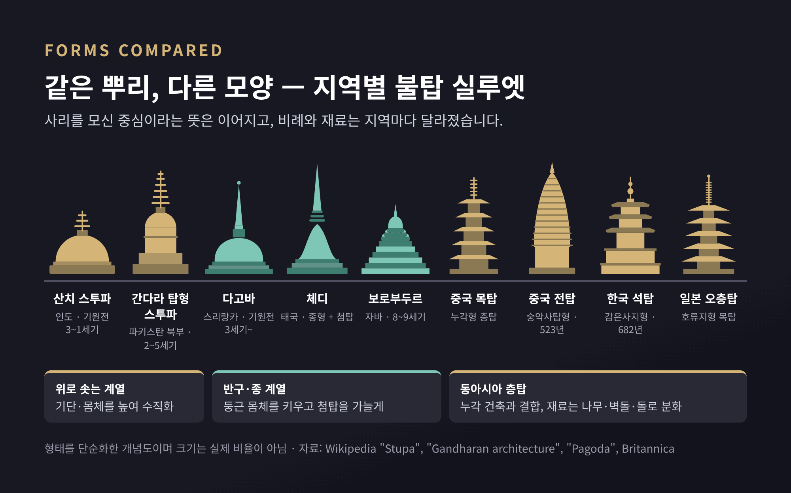
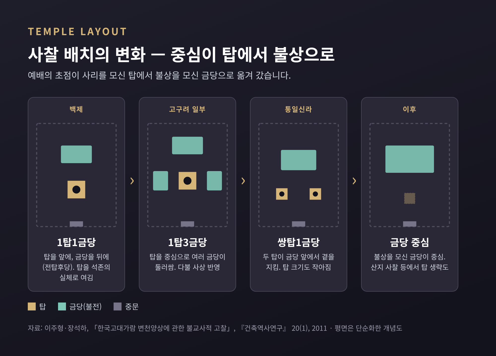

스투파에서 석탑까지 — 사리탑은 아시아를 건너며 어떻게 변했을까

이번 글에서는 인도의 반구형 스투파가 아시아 곳곳으로 퍼지며 어떤 모습으로 바뀌었는지 정리해 보겠습니다. 산치 대탑에서 출발해 간다라, 스리랑카, 동남아, 중국을 거쳐 한국의 석탑과 일본의 오층탑까지 따라갑니다. 특정 신앙의 옳고 그름이 아니라, 하나의 종교 건축이 지역마다 어떻게 번역되었는지를 비교종교의 눈으로 살펴보려 합니다.
세 줄 요약
- 스투파는 '더미'라는 뜻의 사리 봉분이고, 핵심은 처음부터 끝까지 '사리를 모신 중심'과 '그 둘레를 도는 길'입니다.
- 간다라에서 위로 솟기 시작한 탑은 중국에서 누각 건축과 만나 층탑이 되었고, 재료는 지역 사정에 따라 나무·벽돌·돌로 갈렸습니다.
- 한국은 목탑을 돌로 옮긴 석탑 전통을 세웠고, 불상과 금당이 예배의 중심이 되면서 탑의 자리는 점차 바뀌었습니다.
## ■ 스투파는 무엇을 담는 건축인가
산스크리트어 '스투파(stūpa)'는 본래 '더미'라는 뜻입니다. 팔리어로는 '투파(thūpa)'라고 합니다. 한국어 '탑', 중국어 '타(tǎ)', 일본어 '토(tō)'도 이 말에서 갈라져 나온 것으로 봅니다.
학자들은 스투파의 뿌리를 불교 이전의 봉분에서 찾기도 합니다. 초기 스투파가 더 오래된 매장지 근처에서 발견된다는 점이 근거입니다. 흙을 둥글게 쌓아 누군가를 기리는 형식이 붓다의 유골을 모시는 건축으로 이어졌다는 해석입니다.
여기서 전승과 역사를 나눠 볼 필요가 있습니다. 『대반열반경』 계통의 전승에 따르면, 다비 후 여러 나라가 사리를 두고 다투자 브라만 드로나가 사리를 여덟 몫으로 나눴습니다. 사리를 나눈 그릇과 남은 재까지 더해 모두 열 기의 탑이 세워졌다고 전합니다. 한 세기 남짓 뒤 아소카왕(재위 기원전 273~232년)이 그중 일곱 곳의 사리를 거두어 8만 4천 탑에 다시 나눴다는 이야기도 유명합니다. 다만 이것은 『마하왐사』·『아쇼카바다나』 같은 문헌이 전하는 전승입니다. 브리태니커도 "그렇게 했다고 전해진다"는 표현을 씁니다.
고고학이 확인한 것도 있습니다. 인도 바이샬리의 사리 스투파는 기원전 5세기의 진흙 스투파로, 1958~62년 발굴 때 중심부에서 재와 흙이 담긴 사리함이 나왔습니다. 전승이 모두 사실로 증명된 것은 아니지만, 초기부터 사리를 탑 깊숙이 넣는 관행이 있었다는 점은 분명합니다.
## ■ 산치 대탑 — 반구 하나에 담긴 우주
인도 마디아프라데시주의 산치 대탑(제1탑)은 이 건축의 '원형'으로 자주 소개됩니다. 유네스코는 산치를 "현존하는 가장 오래된 불교 성소"라고 설명하며, 1989년 세계유산으로 등재했습니다.
산치 대탑은 한 번에 지어진 건축이 아닙니다. 기원전 3세기 아소카왕 때 벽돌로 처음 세워졌습니다. 이후 슝가 왕조 때 크기를 키우고 돌로 겉을 감쌌으며, 난간과 계단, 꼭대기 장식이 더해졌습니다. 사방의 문 토라나는 인도 고고학조사국이 기원전 1세기로, 유네스코는 장식 연대를 기원후 1세기로 적고 있어 문헌마다 차이가 있습니다. 5세기 굽타 시대에는 네 입구를 향해 앉은 불상이 추가됐습니다.
크기는 지름 약 37m, 높이 약 17m입니다. 유네스코 자료는 기단 지름 36.6m, 현재 높이 16.5m로 조금 더 세밀하게 적습니다.

구조를 위에서부터 보면 이렇습니다.
- 차트라 — 중심 기둥이 받치는 3단 우산. 불·법·승 삼보를 상징한다고 풀이됩니다.
- 하르미카 — 돔 꼭대기의 사각 난간. '세계의 산'을 상징한다고 봅니다.
- 안다 — 속이 꽉 찬 반구형 돔. 그 깊숙한 곳에 사리실이 있습니다.
- 메디 — 돔을 두른 원형 단. 신자들이 이 위를 시계방향으로 돕니다.
- 베디카와 토라나 — 전체를 감싸는 울타리와 사방의 문. 문에는 붓다의 생애와 전생 이야기가 새겨져 있습니다.
눈여겨볼 대목이 하나 있습니다. 토라나의 정교한 조각 속에 붓다는 사람의 모습으로 거의 등장하지 않습니다. 빈 대좌, 보리수, 발자국, 법륜, 산개를 받친 빈 말 같은 상징으로 표현됩니다. 이런 '무불상' 단계가 기원후 1세기 무렵까지 이어졌다는 것이 오랜 통설입니다. 1990년 수전 헌팅턴은 이 장면들이 실은 사리 숭배나 성지 의례를 그린 것이라는 반론을 냈고, 논쟁은 아직 이어지고 있습니다.
어느 해석을 따르든, 이 시기 예배의 중심이 탑이었다는 점은 달라지지 않습니다. 신자는 사리를 품은 반구를 오른쪽에 두고 돌았습니다. 이 예경을 '프라닥시나', 한자로는 '우요(右繞)'라고 합니다.
## ■ 간다라와 스리랑카 — 위로 솟거나, 옆으로 커지거나

스투파는 인도를 떠나며 크게 두 방향으로 퍼졌습니다. 북서쪽 간다라를 거쳐 동아시아로 가는 길, 그리고 남쪽 스리랑카를 거쳐 동남아로 가는 길입니다.
간다라에서는 탑이 위로 솟기 시작했습니다. 지금의 파키스탄 북부 일대인 간다라의 스투파는 사각 기단을 높이 쌓고, 그 위에 원통형 몸체를 세운 뒤 돔을 얹었습니다. 꼭대기의 산개도 여러 겹으로 늘었습니다. 초기에는 산치처럼 땅 위에 바로 놓인 반구형이었지만, 2세기에는 길쭉한 형태가, 4~5세기에는 탑처럼 수직성이 강한 형태가 나타납니다. 연구자들은 이 탑형 스투파를 중앙아시아 탑과 중국 탑으로 이어지는 선구로 봅니다.
상징적인 예가 페샤와르의 카니슈카 대탑입니다. 높이에 대한 기록은 제각각입니다. 현대 추정은 약 120m이고, 고대 여행자들의 기록은 최대 170m에 이릅니다. 520년 무렵 송운의 기록은 그보다도 높게 적고 있습니다. 1908~09년 발굴 때는 기단에서 육각형 수정 사리함이 나왔습니다.
같은 시기 간다라에서는 그리스풍의 불상이 본격적으로 만들어졌습니다. 탑의 꼭대기가 높아지는 동안, 탑 밖에서는 붓다를 사람의 얼굴로 마주하는 새로운 예배가 자라고 있었습니다.
스리랑카에서는 반구가 거대해졌습니다. 스리랑카에서는 스투파를 흔히 '다고바'라 부르며, 몸체 한가운데 사리실을 둡니다. 전승에 따르면 최초의 역사적 스투파인 투파라마는 아소카왕이 보낸 붓다의 오른쪽 쇄골 사리를 모시기 위해 세워졌습니다. 스리랑카 문헌은 다고바의 형태를 볏단 더미형, 종형, 물거품형, 항아리형, 연꽃형 등으로 나눠 부릅니다.
규모는 놀랍습니다. 아누라다푸라의 루완웰리세야는 기원전 2세기 두투게무누 왕이 세운 것으로, 높이 약 90m 규모입니다. 3세기 마하세나 왕이 착공한 제타바나라마야는 원래 높이가 122m였다고 합니다. 구운 벽돌 약 9,330만 장이 들어갔고, 건립 당시 기자의 두 피라미드 다음으로 높은 구조물이었다고 평가됩니다. 인도의 반구형을 버리지 않고, 그 형식을 극한까지 키운 방향이었습니다.
## ■ 동남아 — 종 모양 체디와 오르는 탑, 보로부두르
스리랑카의 종형 다고바는 동남아로 이어졌습니다. 태국에서는 스투파를 주로 '체디'라 부르는데, 몸체가 돔형이나 종형이고 꼭대기는 가늘고 높은 첨탑으로 솟습니다. 크메르 건축에서 온 탑 모양의 성소 '프랑'도 함께 쓰입니다.
미얀마 양곤의 쉐다곤 탑은 높이 99m, 꼭대기 장식까지 112m입니다. 전승에 따르면 붓다의 머리카락 여덟 가닥과 과거 세 부처의 유물을 모셨습니다. 전설은 2,500년 넘은 탑이라고 말하지만, 왕실 연대기에 처음 등장하는 것은 1362년 무렵입니다. 신앙의 시간과 기록의 시간이 다르게 흐르는 좋은 예입니다.
인도네시아 자바의 보로부두르는 스투파를 '오르는 건축'으로 바꿔 놓았습니다. 8~9세기 사일렌드라 왕조 때 지어졌고(브리태니커는 약 778~850년), 1991년 세계유산이 되었습니다. 사각 기단 위에 사각 테라스 다섯 단과 원형 테라스 세 단을 쌓고, 정상에 큰 스투파를 올렸습니다. 원형 단은 구멍 뚫린 종형 스투파 72기가 둘러싸고, 그 안마다 불상이 앉아 있습니다.
순례자는 동쪽 계단에서 출발해 시계방향으로 각 층을 돌며 위로 올라갑니다. 그 길이가 5km를 넘습니다. 아래층 부조는 욕망의 세계를, 중간층은 붓다의 생애와 전생담을 보여 줍니다. 돌면서 오르는 동안 세계관의 단계를 몸으로 통과하도록 짜인 구조입니다. 우요라는 오래된 예경이 거대한 입체 구조와 결합한 사례입니다.
## ■ 중국과 일본 — 누각과 만나 층탑이 되다

중국에 들어온 탑은 이미 있던 누각·망루 건축과 결합했습니다. 여러 층의 목조 누각 꼭대기에 스투파의 상징이 작게 얹히는 구조가 된 것입니다. 과학사가 조지프 니덤은 중국 탑을 한나라 목조 망루와 연결해 설명하기도 했습니다.
초기의 대표작은 목탑이었습니다. 북위가 516년 낙양에 세운 영녕사 탑은 9층으로 추정되며, 높이는 약 100m에서 155m까지 추정이 엇갈립니다. 이 탑은 534년 낙뢰로 불타 사라졌습니다. 나무는 높게 올리기 좋지만 불에 약했습니다.
그래서 벽돌과 돌이 등장합니다. 523년 숭산에 세워진 숭악사탑은 현존하는 가장 오래된 전탑(벽돌탑)으로, 높이 약 40m의 12각형 탑입니다. 그렇다고 목탑이 사라진 것은 아닙니다. 1056년 요나라 때 세운 산시성 응현 목탑은 높이 67.31m로, 지금도 남아 있는 가장 오래되고 가장 높은 순목조 탑으로 꼽힙니다. 겉으로는 5층이지만 안에서 보면 9층입니다. 동아시아 탑은 대개 3층에서 13층 사이이고, 거의 언제나 홀수 층입니다.
일본으로 탑이 건너간 길에는 백제가 있습니다. 588년 백제에서 사찰 기술자, 기와 장인, 화공 등이 파견되었고, 소가노 우마코가 아스카데라를 세웠습니다. 『일본서기』는 593년 "찰주 초석에 사리를 넣었다"고 적고 있으며, 1957년 발굴에서 초석의 사리 용기가 실제로 확인됐습니다.
나라현 호류지의 오층탑은 높이 약 32.5m입니다. 탑을 관통하는 중심 기둥 '신바시라'는 594년에 벤 노송나무로 확인됐습니다. 이 기둥은 초석 표면 아래 약 3m에 놓이고, 그 밑에 붓다의 사리로 믿어지는 유물이 봉안되어 있습니다. 일본에는 1850년 이전에 지어진 목조 오층탑이 22기 남아 있습니다. 지진이 잦은 땅에서 유연한 나무 구조를 고집한 선택이었습니다.
## ■ 한국 — 목탑을 돌로 옮긴 나라
브리태니커는 탑의 역사에서 한국의 독자적 기여로 화강암 석탑을 꼽습니다. 실제로 한국에는 석탑이 압도적으로 많고, 옛 목탑은 법주사 팔상전 정도만 남아 있습니다. 하지만 처음부터 돌이었던 것은 아닙니다.
신라의 황룡사 구층목탑은 645년에 완성되었습니다. 상륜부까지 225척, 약 80m 높이였다고 합니다. 자장의 건의로 세워졌고, 백제 장인 아비지가 기술을 지도했습니다. 아홉 층은 각각 주변 나라를 누른다는 호국의 의미를 담았다고 전하며, 탑 기둥 속에는 자장이 가져온 사리를 모셨습니다. 이 탑은 1238년 몽골 침입 때 불타 사라졌습니다.
목탑의 형식을 돌로 옮긴 첫 실험은 백제에서 나왔습니다. 익산 미륵사지 석탑은 2009년 발견된 금제 사리봉영기의 '기해년' 명문으로 639년 건립이 확인되었습니다. 남은 6층까지 복원한 높이는 14.5m로, 한국에서 가장 큰 석탑입니다(해체 당시 실측은 14.2m). 돌기둥이 위로 갈수록 가늘어지고, 나무 건축의 들보까지 돌로 깎아 냈습니다. 목탑을 거의 그대로 돌로 번역한 셈입니다. 원래 9층이었다는 견해가 있지만, 7층 이상의 원형을 입증할 자료는 아직 없습니다.
부여 정림사지 오층석탑(높이 8.33m)은 같은 목조 형식을 따르면서도 훨씬 간결해졌습니다. 얇고 넓은 지붕돌과 단정한 비례가 특징입니다. 신라의 분황사 모전석탑(634년 추정)은 다른 길을 택했습니다. 안산암을 벽돌 모양으로 잘라 쌓아, 중국 전탑의 인상을 돌로 재현했습니다.
통일 이후 이 실험들은 하나의 전형으로 정리됩니다. 682년 완성된 감은사지 동서 삼층석탑은 각각 높이 약 13.4m입니다. 2층 기단 위에 3층 탑신을 올린 이 형식을, 한국민족문화대백과는 "우리나라 석탑의 전형으로 정립"되었다고 평가합니다. 751년 무렵 세워진 불국사 석가탑(10.75m)도 같은 2층 기단·3층 탑신 형식을 따릅니다.
같은 마당의 다보탑(10.29m)은 전혀 다른 언어를 씁니다. 『법화경』「견보탑품」에는 석가여래의 설법을 과거불인 다보여래가 증명한다는 내용이 나옵니다. 불국사는 이 장면을 두 탑으로 마주 세웠습니다. 십자형 기단과 팔각 탑신에 사각·팔각·원형을 겹쳐, 나무 건축의 복잡한 짜임을 화강암으로 표현했습니다. 경전의 한 장면이 건축 배치가 된 드문 사례입니다.
## ■ 사리장엄구 — 탑 속에 넣은 작은 우주
탑이 사리를 모신 건축이라면, 그 사리를 담는 그릇이 사리장엄구입니다. 한국의 여러 석탑에서는 탑신의 돌에 구멍(사리공)을 파고 그 안에 여러 겹의 용기를 넣은 사례가 확인됩니다.
감은사지 동탑의 사리장엄구가 좋은 예입니다. 1996년 해체 수리 중에 3층 탑신에서 발견되었습니다. 가장 바깥은 네 면에 사천왕을 새긴 사각 외함입니다. 그 안에 기단과 지붕(천개)을 갖춘 작은 전각 모양의 내함이 있고, 한가운데 높이 약 3.65cm의 수정 사리병이 놓였습니다. 감은사지 3층 탑신을 돌 한 장으로 만든 것도 이 사리 장치를 위한 방편으로 봅니다. 탑 안에 다시 작은 건축을 넣은 구조입니다.
미륵사지 석탑에서는 금제 사리호와 193자의 사리봉영기 등 약 500점이 나왔습니다. 봉영기에는 왕후가 '좌평 사택적덕의 딸'로 적혀 있어, 선화공주 설화와 어떻게 맞춰 읽을지를 두고 논의가 이어졌습니다. 석가탑에서는 1966년 2층 탑신의 사리공에서 『무구정광대다라니경』이 나왔습니다. 간기가 없어 정확한 연대는 알 수 없지만, 학계는 742년 이전 간행으로 보며 현존 최고(最古)의 목판 인쇄물로 소개됩니다. 붓다의 몸을 대신해 경전이 탑에 들어가기 시작했다는 점도 흥미롭습니다.
반대로 잃어버린 경우도 있습니다. 다보탑은 1925년경 일제강점기에 해체·보수되었지만 기록이 남지 않았습니다. 그 과정에서 사리와 사리장치의 행방도 알 수 없게 되었습니다.
## ■ 탑돌이와 가람배치 — 중심이 탑에서 불상으로

산치의 신자들이 반구를 돌던 우요는 한국에서 '탑돌이'로 이어졌습니다. 한국민족문화대백과에 따르면 탑돌이는 사월 초파일이나 큰 재(齋) 때 행하는 의식이었습니다. 승려가 염주를 들고 탑을 돌며 부처의 공덕을 찬송하면, 신도들이 등을 들고 뒤따르며 극락왕생을 빌었습니다. 불교가 대중화되면서 삼현육각 반주와 민요풍 노래가 더해진 민속놀이로 넓어졌고, 소원도 나라의 평안이나 개인의 바람으로 다양해졌습니다. 한동안 끊겼다가 1970년 속리산 법주사에서 다시 재현되었습니다. 도는 몸짓은 같아도, 그 안에 담긴 기원과 분위기는 지역의 삶을 따라 바뀐 것입니다.
탑의 위상 자체도 달라졌습니다. 이주형·장석하(2011)의 연구는 한국 고대 사찰의 배치 변화를 이렇게 정리합니다.
| 단계 | 배치 | 탑의 위상 |
|---|---|---|
| 백제 | 1탑1금당 | 석존의 실체로 여긴 탑을 앞에, 금당을 뒤에 둠 |
| 고구려 일부 | 1탑3금당 | 탑을 중심으로 여러 금당이 둘러쌈 |
| 통일신라 | 쌍탑1금당 | 두 탑이 금당 앞에서 곁을 지키는 역할, 크기도 작아짐 |
| 이후 | 금당 중심 | 산지 사찰 등에서 탑이 생략되기도 함 |
예전에는 사리를 모신 탑이 곧 붓다의 현존이었습니다. 지금 우리가 아는 사찰에서는 대웅전의 불상이 예배의 중심입니다. 연구자들은 그 원인으로 불상이 독립된 예배 대상이 된 점, 여러 부처와 정토를 그리는 대승 신앙의 확산, 의례의 발달 등을 듭니다. 감은사지와 불국사의 쌍탑은 이 전환의 한가운데에 서 있는 건축입니다.
정리하면 이렇습니다. 흙을 쌓은 반구는 간다라에서 솟아올랐고, 스리랑카에서 거대해졌으며, 자바에서는 오르는 산이 되었습니다. 중국에서 누각을 만나 층탑이 되었고, 한국에서는 돌로, 일본에서는 나무로 정착했습니다.
물론 이 계보가 깔끔한 일직선은 아닙니다. 수치와 연대는 문헌마다 다르고, 사리 분배나 탑의 기원 상당 부분은 여전히 전승의 영역에 있습니다. 그럼에도 한 가지는 일관되게 남습니다.
"가운데에 모신 것이 있고, 그 둘레를 도는 길이 있다."
모양은 수없이 바뀌었지만 이 두 요소는 2천 년 넘게 거의 그대로였습니다. 다음에 오래된 석탑 앞에 서게 되신다면, 한 바퀴쯤 천천히 돌아보셔도 좋겠습니다. 그 걸음이 산치의 원형 단에서 시작된 오래된 길과 이어져 있으니까요.
참고 자료
- UNESCO World Heritage Centre — Buddhist Monuments at Sanchi: https://whc.unesco.org/en/list/524/
- UNESCO World Heritage Centre — Borobudur Temple Compounds: https://whc.unesco.org/en/list/592/
- UNESCO World Heritage Centre — Buddhist Monuments in the Horyu-ji Area: https://whc.unesco.org/en/list/660/
- Archaeological Survey of India — Buddhist Monuments at Sanchi: https://asi.nic.in/pages/WorldHeritageBuddhistMonumentsatSanchi
- Britannica — Great Stupa / Borobudur / Pagoda / The Buddha's relics
- 한국민족문화대백과 — 경주 감은사지 동서 삼층석탑: https://encykorea.aks.ac.kr/Article/E0000807
- 한국민족문화대백과 — 감은사지 동 삼층석탑 사리장엄구: https://encykorea.aks.ac.kr/Article/E0067031
- 한국민족문화대백과 — 황룡사 구층목탑: https://encykorea.aks.ac.kr/Article/E0065127
- 한국민족문화대백과 — 탑돌이: https://encykorea.aks.ac.kr/Article/E0058838
- 한국민족문화대백과 — 무구정광대다라니경: https://encykorea.aks.ac.kr/Article/E0018943
- 이주형·장석하, 「한국고대가람 변천양상에 관한 불교사적 고찰」, 『건축역사연구』 20(1), 2011
- 일본 관광청 다언어 해설 — Horyuji Five-Story Pagoda: https://www.mlit.go.jp/tagengo-db/en/R1-00170.html
#스투파 #석탑 #불탑 #산치대탑 #미륵사지석탑 #감은사지 #석가탑 #다보탑 #탑돌이 #비교종교